| 1 Criteria related to the sampling design: |
| 1.1 Observation timing allowing identification of crop type in the field |
| 1.2 Minimum number of samples for marginal crops to provide balanced datasets |
| 1.3 Local homogeneity of each sample unit to match the satellite observation footprint |
| 2 Criteria related to the response design: |
| 2.1 Georeferenced ground observation at field or point level |
| 2.2 Sample unit size at least matching the satellite observation footprint |
| 2.3 Contextual observation to document sample quality |
| 2.4 Rich labelling beyond crop type (e.g., weeds, water lodging, etc.) |
16 Multi-seasonal crop mapping in Senegal
16.1 Introduction
Earth Observation (EO) technologies are increasingly recognized as transformative tools for enhancing agricultural statistics. However, their integration into official systems is often constrained by the structure and quality of in-situ data collected via agricultural surveys and censuses.
In response, FAO, through the EOSTAT and European Space Agency Sen4Stat projects, developed a diagnostic framework to assess the fitness-for-use of collected in-situ data for EO applications. Since 2019, FAO and UCLouvain have collaborated with the Direction de l’Analyse, de la Prévision et des Statistiques Agricoles (DAPSA) under the EOSTAT project to assess and enhance the compatibility of Senegal’s agricultural survey system with EO applications. The Annual Agricultural Survey (AAS) in place in Senegal is a list frame survey over all country. Holdings are selected through a stratified sampling from the 526.000 holdings in Senegal, which corresponds to ~ 0.4%. These holdings are spread in all the Senegalese departments, in direct ratio to the size of these departments.
16.2 FAO in-situ quality framework
FAO and Université catholique of Louvain in Belgium (UCLouvain) have been testing and experimenting data quality framework for the collection of in situ data that would ensure fitness for use with EO applications, in particular to combine the national surveys with crop type maps with the finality to improve crop statistics.
Finally in 2025 the experience gained after several field experiments culminated in the publishing of a first in-situ quality framework for assessing the compatibility of field data collected through Surveys and Census operations with EO applications (De Simone et al., 2025).
The framework includes two pillars:
Survey Design Assessment (Table 16.1): Evaluates the structural compatibility of sampling protocols with EO needs (e.g., crop observability, georeferencing precision, and metadata completeness).
EO-Based Post-Hoc Assessment (Table 16.2): Applies satellite-derived analytics (e.g., Normalized Difference Vegetation Index time series clustering, visual cross-checks) to validate the internal consistency and label quality of field samples.
While the framework does not assign numerical scores, it identifies key design gaps and recommends corrective actions. A dataset is considered unfit if significant gaps in either pillar remain unresolved.
| 3 Criteria for EO-based data quality control: |
| 3.1 Completeness of sample information |
| 3.2 Topology integrity of georeferenced features |
| 3.3 Metadata completeness |
| 3.4 GPS coordinate accuracy visually checked with EO imagery |
| 3.5 Sample purity based on multispectral reflectance values |
| 3.6 Labelling quality based on NDVI time series clustering |
16.3 Crop mapping based on Annual Agricultural Survey
16.3.1 Annual Agricultural Survey 2018
The Annual Agricultural Survey (AAS) database from 2018 was shared by DAPSA as a baseline dataset to evaluate its fitness for EO-based crop mapping using FAO’s in-situ quality framework. The AAS database included 16,861 records corresponding to individual parcels cultivated by approximately 4,693 households surveyed across the country. In each holding, farmers are interviewed during the main cropping season and GPS measurements are done in a selection of fields, which are described in terms of crop type and crop practices (Figure 16.1).
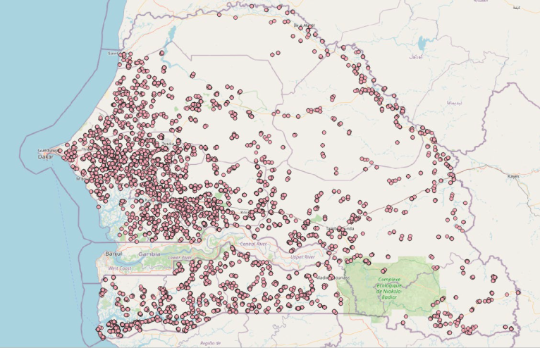
Parcels’ area is also measured with GPS and this measured area is then reported manually in the survey questionnaire available on the tablet. Unfortunately, the GPS traces are not systematically archived – only a subset of them are kept for quality control by the supervision team at DAPSA. A subset of these traces, mainly located between Touba and Thiès, was also shared by DAPSA (Figure 16.2).
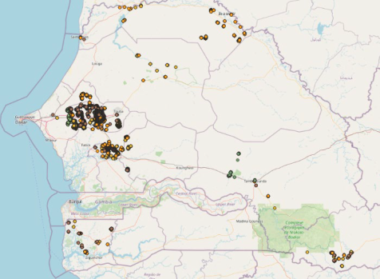
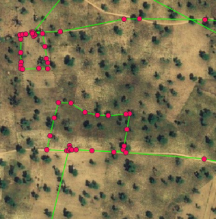
To summarize, georeferenced information is available at crop-level, as points (parcels boundaries are not available by-default), for a selection of parcels. Information is collected at the right timing to allow crop identification and additional information.
16.3.2 Quality control of AAS data
The quality of the 16,861 records as GPS points inside the AAS database was assessed through multiple stages.
First, all points located too close to roads and buildings were removed and points located less than 20 meters apart but associated with different crops are removed. The second stage of the quality control addressed the important challenge of working with GPS points (and not polygons), i.e. checking if the point is located in the middle of the parcel. For the sake of illustration, Figure 16.3 shows two situations where (i) point was taken at the middle of the parcels, thus making the parcels easily identifiable (left) and (ii) point was taken on the path along the parcels which makes almost impossible to know which parcel it refers to (right).
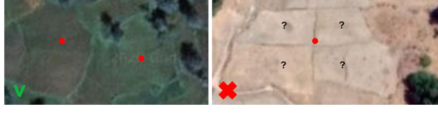
In order to avoid manually checking all points, the points were transformed into polygons by applying a 20-m buffer and the homogeneity of these polygons was assessed statistically. The assumption was that if the point was taken in the middle of the parcel, the resulting buffer would be homogeneous. Conversely, a point taken along the edge of the plot would result in a buffer mixing different crop types or including other land cover types such as roads or trees. This assessment was done calculating the standard deviation of the Normalized Difference Vegetation Index standard deviation.
During this step, it was observed that most points labelled as “rice” were located at the edges of the fields (probably because it is difficult to walk to the center of a rice field) and would thus be removed using the above criterion. In order to keep a good representation of rice in the reference database, all points were replaced manually in the middle of the fields thanks to Google Earth imagery.
At this stage, 12,056 polygons out of the 16,861 initial records remain.
16.3.3 Quality control of GPS traces
The raw GPS traces were converted into usable polygon shapefiles. This process involved removing irrelevant data, correcting naming inconsistencies, and cleaning line artifacts caused by enumerator movement between fields (Figure 16.4).
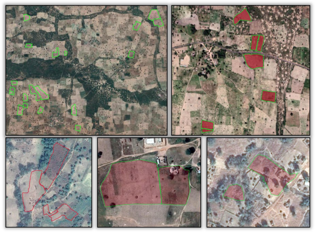
The GPS traces needed also to be quality controlled and filtered:
Traces unrelated to valid records in the AAS database (e.g., invalid file name) were discarded
Traces including non-boundary movements (e.g., travel paths) were removed (Figure 16.5)
Traces with fewer than 3 points were excluded as they could not form polygon
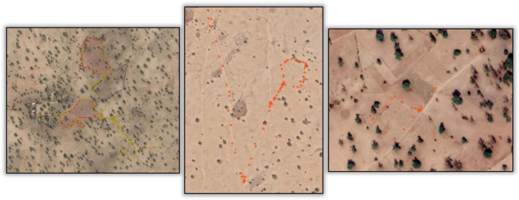
Finally, too small polygons (the ones that disappeared after a 10-m inside buffer) were removed. Only 1,593 high-quality parcel boundaries remained, concentrated in central and western Senegal and representing 2089 hectares shared unequally into 22 crop type classes (Figure 16.6).
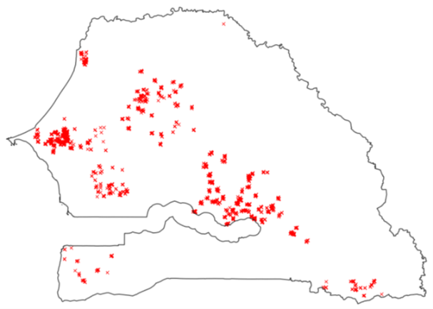
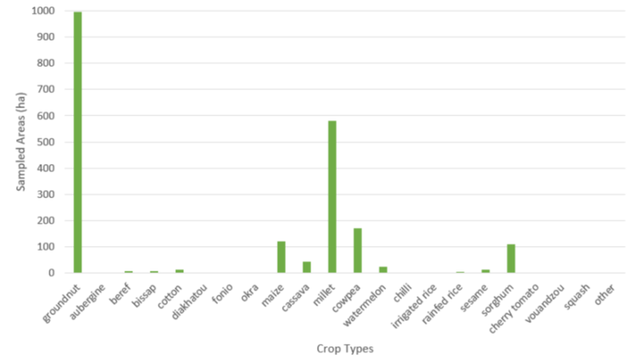
These crop data are expected to be the most useful ones because (i) they are polygons, thus including several pixels belonging to the same crop and (ii) the parcels boundaries have been checked manually. Nevertheless, these data don’t contain enough samples in all the crop types and they are not spread over the whole country.
16.3.4 Crop mapping based on AAS 2018
Before running a classification using satellite imagery, additional non-crop information was collected by visual interpretation of very high spatial resolution Google Earth and Planet imagery. This information is not collected by regular agricultural surveys, which essence focuses on crop areas, but it is needed to train classification algorithms.
The classification was run using both the points and polygons dataset, based on GPS traces. The class imbalance in the dataset was addressed by limiting the number of groundnut samples to a maximum of 400 hectares and of rice samples to 100 hectares.
The amended dataset enabled the generation of a national 10-meter spatial resolution binary cropland / non-cropland mask, with an overall accuracy of 98% and F-Score values of 76% and of 99% for the cropland and non-cropland classes, respectively. A visual inspection of the map revealed that the classification performed relatively well: the discrimination was good between cropland and the natural shrub and tree vegetation, the urban areas and the bare soil. The discrimination with the grassland was however of lower quality and the irrigated perimeters were not well identified as cropland, due to their poor representation in the in-situ data.
A national crop type map was also generated, focusing only on the main crops for which enough samples were available (groundnut, maize, cassava, millet, cowpea, rice and sorghum). The overall accuracy was 78%. The patterns of the fields were generally well identified, showing that the Sentinel-2 10-meter spatial resolution has the capacity of mapping crop types at field-level. However, the map was affected by significant confusion between crops.
A local crop type map was also produced, focusing only on the Sentinel-2 tile where polygons are available, was much more promising, with an overall accuracy increasing to 85% (Figure 16.7). The results showed the added-value of working with polygons instead of points and of relying on many more samples to calibrate the algorithm.
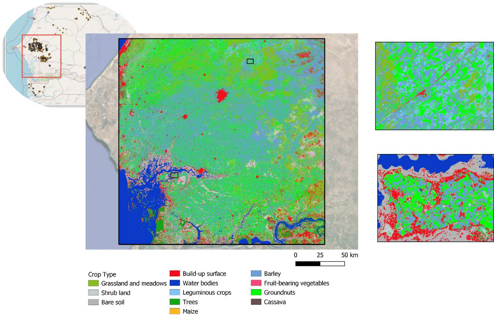
The rigorous preprocessing and quality assessment of the AAS and GPS traces data played a pivotal role in achieving this result. However, the AAS protocol in place was not optimal to allow reaching higher mapping accuracy: GPS information is mainly recorded as points, minor crops are under-represented and contextual information was missing (e.g. field heterogeneity, mixed cropping).
16.4 Development and testing of an adjusted AAS protocol in 2021 in the Nioro department
16.4.1 General description
Building on the lessons from the 2018 AAS, FAO supported a pilot activity in Nioro du Rip district between 2021–2022 to align the agricultural survey protocol with EO requirements. The proposed adjustments primarily targeted the georeferencing of the collected data by (1) transitioning from points to polygons and (2) testing area measurement using a tablet instead of a GPS, in order to simplify protocol implementation and reduce naming errors. It also added contextual and labelling information about crops in the questionnaire.
The pilot protocol discussed with the DAPSA consisted in recording parcels boundaries and no more GPS points for the visited parcels. These boundaries were recorded using two different devices for the sake of comparison: the traditional GPS and the tablet via a data collection application (which was ODK). The ODK application also allowed to collect additional information about crops, such as crop heterogeneity, weeds level and mixed cropping), as well as non cropland classes. The traditional AAS was implemented in parallel on the tablet as usual. Five teams worked on the field and the data collected were sent daily to a server accessible by all participants.
Simultaneously, the DAPSA and UCLouvain carried out rapid quality control of the data each day in order to adjust the survey in real time if necessary.
16.4.2 Parcel boundaries with GPS and ODK
A total of 357 Garmin GPS traces were successfully recorded during the field campaign, compared to the 396 plots listed in the AAS database. The discrepancy was explained by two main issues:
- Plot naming inconsistencies: 29 polygons were not correctly linked to AAS data due to manual errors in GPS file naming. However, several polygons could be recovered through careful manual inspection.
- Loss of GPS traces: some GPS traces were never saved or transferred, preventing linkage with corresponding survey records.
These gaps in AAS–GPS linkage highlight the limitations of relying on manual data entry without real-time synchronization tools.
A total of 231 plots were investigated in the ODK application, out of the 396 plots inventoried by the AAS. This difference was due to a communication error during data collection: taking measurements with two different tools on all parcels complicated the task for the investigators.
Taking the GPS traces as reference, the quality of the field boundaries collected with ODK was quite heterogeneous at the beginning of the field campaign (Figure 16.8). This was due to the time required to learn a new tool, and it was gradually resolved over the course of the campaign thanks to the continuous guidance provided by DAPSA and UCLouvain.
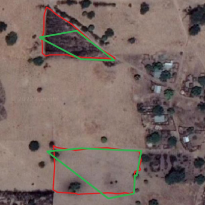
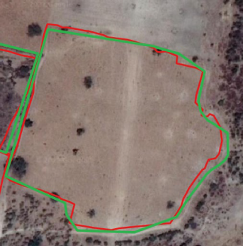
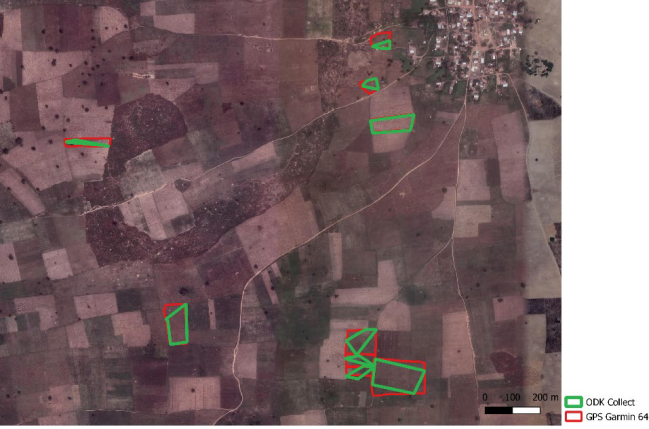
16.4.3 Comparative analysis of the survey data
The data collected in the field by the tablet in manual mode were compared to the GPS data. Figure 16.9 relates the regression line of the tablet dataset to the reference line. The value of the slope is 0.99, close to the value of the reference slope. The position of the regression line and the bias of 0.27 indicates that the tablet data generally underestimated the reference data. This bias is confirmed by a visual analysis of the data.
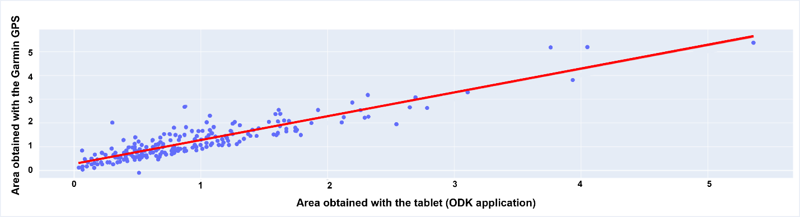
Several measurements deviate significantly from the reference, which comes from the use of the manual mode in ODK (i.e. enumerators to manually encode GPS measures at the inflection points of the plot). Errors in the area measurements were caused by:
- errors in encoding the points by the enumerator;
- waiting time: the tablet’s GPS takes time to stabilize its position with acceptable accuracy. A shortened waiting time can then lead to an error of up to 30 meters from the position of the investigator;
- recording errors by the tablet: it is possible that the device or application does not record a point correctly or does not record it at all.
Statistically and visually, the tablet dataset is less accurate than the one recorded with the GPS and has a bias that underestimates the baseline value. The situation is improving when using ODK in automated mode (Figure 16.10), but the comparative analysis did not support the claim that a tablet can replace a GPS for area measurement.
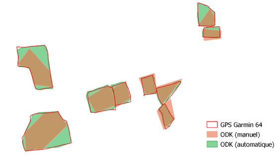
16.4.4 Additional non-crop class data
As part of the pilot, enumerators were instructed to collect data on non-crop land cover classes (e.g., fallow, built-up, water) through the ODK application. However, only a limited number of non-crop polygons were recorded. Several key classes were missing. To fill this gap, additional non-crop features were manually delineated using very high-resolution satellite imagery. In total, 50 non-crop polygons were available for model calibration.
16.5 Crop Classification and area indicators
16.5.1 Sen4Stat solution
The crop type classification was done using the Sen4Stat system (European Space Agency, 2019), an evolution of the Sen2Agri system, whose performance has been demonstrated and validated in a variety of contexts (Defourny et al., 2019).
The Sen4Stat toolbox is a standalone operational processing chain which aims at facilitating the uptake of Earth Observation data in the official processes of National Statistical Offices, since the early stages of the agricultural surveys to the production of statistics. It automatically ingests and processes Sentinel-1 and Sentinel-2 time series in a seamless way for operational crop mapping and yield modelling, using ground data provided by national statistical surveys. It generates a set of EO-based products, such as time series of biophysical indicators, crop type maps and yield estimates. These EO products are then integrated with the agricultural survey to improve the statistics. Different types of statistics improvements are targeted by the system: (i) reduction of the estimates error, (ii) disaggregation to smaller administrative units, (iii) provision of timely crop area and yield estimators and (iv) optimization of sampling design by using maps to build or update sampling master frames. EO products are also used to support the quality control of the survey data.
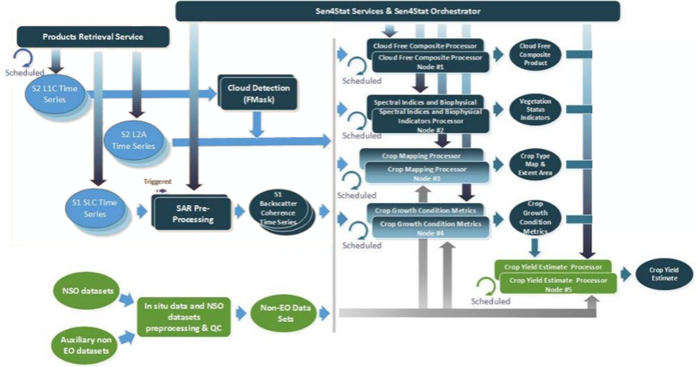
The system has been tested and demonstrated in various countries around the world, thus addressing a wide diversity of both cropping systems and agricultural data collection protocols. It is available for download on the Sen4Stat website (esa-sen4stat.org).
16.5.2 Nioro crop type map 2021
The crop type map was generated at the end of the season from May 1, 2021, to December 31, 2021, using Sentinel-2 time series. The training dataset used contains the 50 non-crop polygons and the 247 crop polygons obtained after joining and cleaning the ODK and GPS dataset (Figure 16.12 – calibration polygons). The distribution of observations is very uneven for the different crops and insufficient for maize.
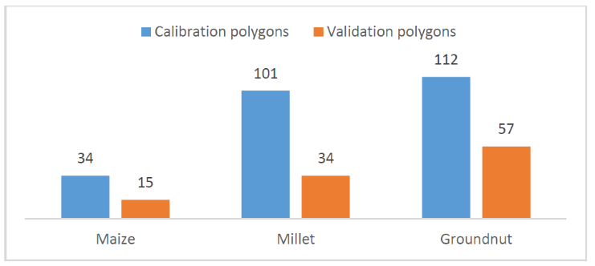
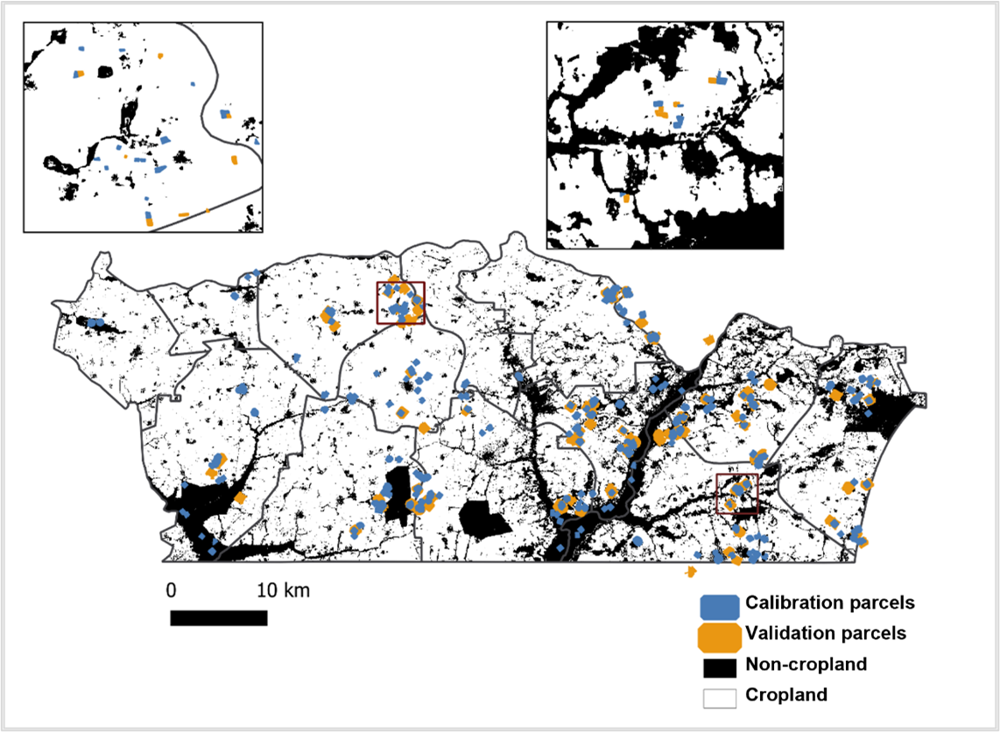
The obtained crop type map is shown in Figure 16.13
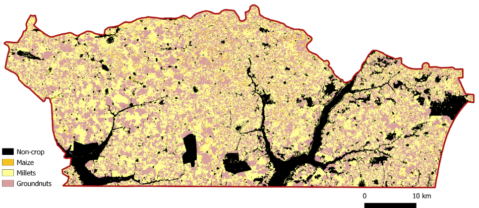
The confusion matrix (Figure 16.14) indicates an overall accuracy of 97.1% for the cropland mask and 88.2% for the crop type map. F-score values were 98% for cropland and 95% for non-cropland. For specific crops, F-scores reached 95.2% for groundnut, 83.8% for millet, but only 54.8% for maize, which showed substantial omissions. The representation of the three crops in the dataset was highly unbalanced, and the number of samples is clearly too low to allow a proper maize classification.
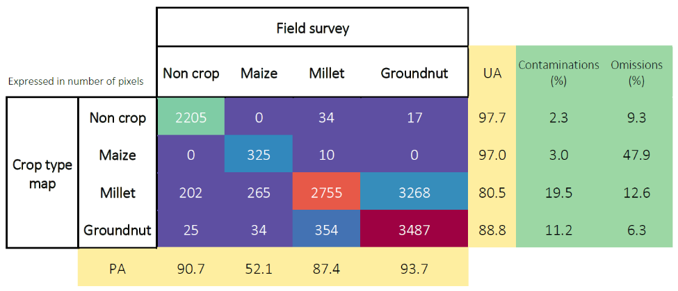
16.5.3 Crop area indicator
Crop area statistics were derived from the crop type map to support EO-based agricultural estimations at the municipality level. Figure 16.15 (a) shows an estimation of the areas per crop using only the remote sensing data per municipality in the Nioro du Rip department while the bottom illustration gives an estimation of the area cultivated in each municipality by the same remote sensing approach. The surface areas per crop were calculated by counting classified pixels and applying bias correction using the confusion matrix.
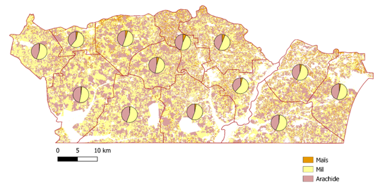
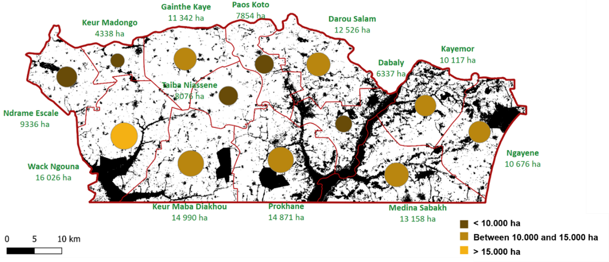
16.5.4 Acreage estimation by integrating survey and EO data
Producing statistics by counting those pixels classified as a given crop type does not provide unbiased area estimates. Maps are subject to omission and commission errors (Czaplewski, 1992), which are linked to the ability of the classification method to distinguish between classes. Regression estimators and calibration estimators have been widely used to correct such biases (F. J. Gallego and Rueda, 1993; Khan et al., 2018; Olofsson et al., 2014; Li et al.,2023). They are traditional ways to combine accurate, possibly unbiased, information, observed on a sample with less accurate, biased information, known for the whole population or for a larger sample. Said differently, maps are used to improve an estimator that has been computed from a ground survey on a sample in preserving as much as possible the properties of the ground survey estimators (unbiasedness) and reducing the variance (Gallego 2004).
Because the sampling design in Senegal is a list frame, the integration of remote sensing and ground data cannot be done using linear models, but with multinomial logit models. These multinomial models deal with the uncertainties and generate probabilities that a pixel of a given class in the map is actually this given crop on the ground. Despite the fact that the map was not perfect, this model successfully demonstrates the added-value of EO data for agricultural statistics estimation.
Figure 16.16 presents the crop acreage estimates in the department of Nioro, for the two main crops which are millet and groundnut and shows the efficiency of using the crop type map to support this estimation of crop acreages.
The use of a wall-to-wall map also allows to make acreage estimates available at the “arrondissement” levels with a reasonable error (expressed as the coefficient of variation), as shown in Figure 16.17.
16.6 Conclusions
The alignment of the AAS protocol with FAO’s in-situ data quality framework significantly enhanced the compatibility of field data with EO applications. Classification accuracy improved from below 78% (with the original 2018 AAS data) to over 85% following the pilot implementation in 2021–2022. This result has to be confirmed by an implementation at larger scale, but it already nicely illustrates the impact of structured, high-quality, plot-level georeferencing.
Moreover, integrating satellite imagery with field data enabled the use of model-assisted estimators—such as regression estimators—for crop area statistics. This approach yielded more accurate results, with lower coefficients of variation, compared to using field data alone.
Building on these outcomes, DAPSA endorsed the revised protocol and extended its implementation to six additional districts in 2024 (Koungheul, Mbacke, Nioro, Kolda, Tambaconda, Dagana). This successful institutionalization underscores the value of diagnostic frameworks, phased piloting, and continuous quality improvement in advancing the operational use of EO in national agricultural statistics.